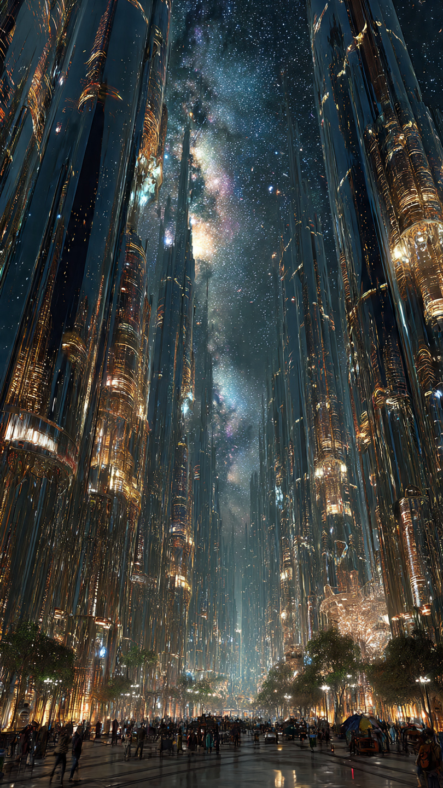
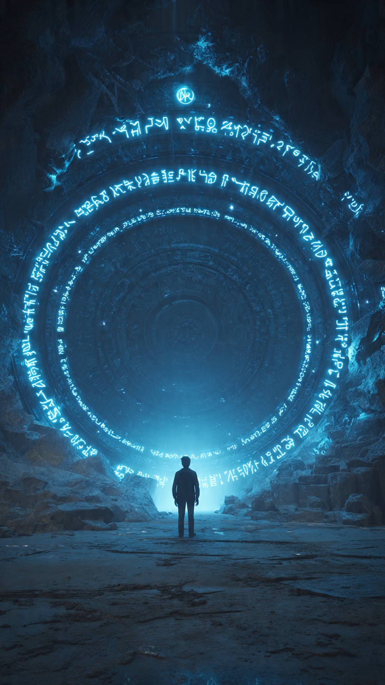

في أقصى أطراف العالم، خلف الجبال التي لا تظهر على أي خريطة، كانت توجد مدينة غريبة تُعرف باسم "مدينة النور الأبدي".
لم يكن أحد يعرف متى بُنيت.
ولا من هم أول سكانها.
لكن الجميع كان يعرف شيئًا واحدًا فقط...
لا أحد ينام فيها أبدًا.
كان المسافرون الذين يمرون بالقرب منها يلاحظون شيئًا عجيبًا.
فالمدينة تظل مضيئة طوال الليل.
والشوارع تبقى مليئة بالناس.
والأسواق لا تغلق أبوابها.
والأطفال يلعبون حتى مع شروق الشمس دون أن يشعروا بالتعب.
انتشرت القصص حول هذا المكان.
قال البعض إن سكان المدينة اكتشفوا سر القضاء على النوم.
وقال آخرون إنهم تعرضوا لتعويذة قديمة جعلتهم ينسون معنى الراحة.
أما كبار السن في القرى المجاورة، فكانوا يحذرون الجميع قائلين:
"إذا دخلت المدينة...
فقد لا تنام مرة أخرى طوال حياتك."
في إحدى القرى القريبة، كان يعيش شاب مغامر يُدعى آدم.
كان يعشق اكتشاف الأسرار التي يخاف منها الجميع.
كلما سمع قصة غامضة...
قرر أن يبحث عن حقيقتها بنفسه.
وعندما سمع عن المدينة التي لا ينام فيها أحد، لم يستطع مقاومة فضوله.
في صباح أحد الأيام، حمل حقيبته، وأخذ خريطته القديمة، وانطلق في رحلة طويلة عبر الغابات والوديان.
استغرقت الرحلة ثلاثة أيام كاملة.
وفي الليلة الرابعة...
رأى أضواء المدينة تتلألأ من بعيد.
لكن الغريب...
أن الشمس كانت قد غربت منذ ساعات طويلة.
ورغم ذلك...
بدت المدينة أكثر إشراقًا من النهار.
دخل آدم من البوابة الحجرية الضخمة.
فاستقبله الناس بابتسامات هادئة.
كانوا يعملون، ويتحدثون، ويضحكون...
لكن شيئًا في وجوههم لم يكن طبيعيًا.
عيونهم كانت مفتوحة دائمًا.
لا تظهر عليها أي علامات إرهاق.
ولا حتى رمشة طويلة.
وبينما كان يتجول في الشوارع...
لاحظ ساعة عملاقة في منتصف المدينة.
كانت عقاربها تتحرك للخلف...
وليس إلى الأمام.
وفي اللحظة التي لمس فيها الساعة بيده...
توقف كل شيء حوله فجأة.
واختفى صوت المدينة بالكامل.
ثم سمع همسة خافتة خلفه تقول:
"لقد استيقظت المدينة عليك..."
📷 الصورة رقم 1

استدار آدم بسرعة.
لكن لم يكن هناك أحد خلفه.
عاد الضجيج إلى المدينة فجأة، وكأن شيئًا لم يحدث.
الناس يبتسمون.
التجار يبيعون بضائعهم.
والأطفال يركضون في الشوارع.
أما الساعة العملاقة...
فقد عادت عقاربها تتحرك للخلف ببطء.
قرر آدم أن يسأل أحد السكان.
اقترب من رجل عجوز كان يجلس أمام متجر صغير مليء بالساعات القديمة.
قال له:
"لماذا لا ينام أحد هنا؟"
ابتسم العجوز، ثم أجاب بصوت منخفض:
"لأن النوم هنا... ممنوع."
تجمد آدم في مكانه.
سأل باستغراب:
"ومن الذي منعه؟"
نظر العجوز حوله ليتأكد أن لا أحد يسمعه، ثم همس:
"ملك الأحلام."
لم يفهم آدم شيئًا.
لكن العجوز أخرج مفتاحًا ذهبيًا صغيرًا ووضعه في يد آدم.
وقال:
"إذا أردت معرفة الحقيقة...
اذهب إلى برج الساعة عند منتصف الليل.
لكن احذر...
لا تنظر خلفك مهما سمعت."
انتظر آدم حتى انتصف الليل.
ورغم أن المدينة لم تهدأ لحظة واحدة، شعر بأن الهواء أصبح أثقل، وكأن شيئًا خفيًا يراقبه.
وصل إلى البرج، وأدخل المفتاح في باب خشبي قديم.
صدر صوت صرير طويل...
وانفتح الباب ببطء.
داخل البرج كان كل شيء مغطى بالغبار.
مئات الساعات القديمة معلقة على الجدران.
لكن الغريب أن جميعها كانت تتحرك إلى الخلف.
وفي أعلى البرج وجد كتابًا ضخمًا مكتوبًا عليه:
"سجل الأحلام المسروقة".
فتح الصفحة الأولى...
فوجد آلاف الأسماء.
وبجوار كل اسم كلمة واحدة فقط:
"آخر حلم".
ثم رأى اسمه مكتوبًا في الصفحة الأخيرة.
لكن بجواره لم تكن هناك أي كلمة بعد...
وكأن الكتاب كان ينتظر أن يكتب نهايته.
وفجأة...
انطفأت جميع الأنوار.
وتوقفت كل الساعات عن الحركة.
وسمع خطوات ثقيلة تقترب من أعلى البرج.
ثم ظهر ظل طويل يرتدي عباءة سوداء.
وعيناه تلمعان بلون أزرق مخيف.
ابتسم الظل وقال:
"أخيرًا... وصل الشخص الذي سيعيد النوم... أو سيدمره إلى الأبد."
📷 الصورة رقم 2

تراجع آدم خطوة إلى الخلف وهو ينظر إلى الرجل الغامض.
كان طويل القامة، يرتدي عباءة سوداء تتحرك رغم أن الهواء كان ساكنًا.
أما عيناه فكانتا تلمعان كنجمتين في سماء مظلمة.
قال بصوت هادئ لكنه مخيف:
"أنا لست عدوًا... لكن البشر جعلوني كذلك."
لم يفهم آدم ما يقصده.
فسأله:
"من أنت؟"
أجاب الرجل:
"أنا حارس الأحلام."
"منذ مئات السنين، كانت هذه المدينة تنام مثل أي مدينة أخرى."
"لكن في إحدى الليالي، حاول أحد الملوك سرقة قوة الأحلام ليعيش إلى الأبد."
"استخدم سحرًا قديمًا، لكنه فقد السيطرة عليه."
"ومنذ ذلك اليوم... اختفى النوم من المدينة."
اقترب حارس الأحلام من النافذة.
وأشار إلى المدينة المضيئة.
وقال:
"هل ترى الناس؟"
"إنهم يبتسمون... ويعملون... ويتحدثون."
"لكنهم لم يحلموا منذ مئات السنين."
"ومع مرور الوقت... بدأت قلوبهم تفقد مشاعرها."
"فمن لا يحلم... ينسى معنى الأمل."
ثم سلّم آدم بلورة صغيرة مضيئة.
كانت بداخلها دوامات من الضوء الأزرق.
وقال:
"هذه آخر بذرة حلم بقيت في هذا العالم."
"إذا كسرتها..."
"سيعود النوم إلى المدينة."
"لكن جميع ذكرياتك عن هذه المغامرة ستختفي إلى الأبد."
"أما إذا احتفظت بها..."
"فستتذكر كل شيء، لكن المدينة ستبقى سجينة ليلها الأبدي."
وقف آدم صامتًا.
نظر إلى البلورة.
ثم إلى الناس في الخارج.
رأى طفلًا يضحك، لكنه لم يكن يعرف معنى أن يرى حلمًا جميلًا.
ورأى عجوزًا يعمل بلا توقف منذ عشرات السنين.
ورأى أمًا تنظر إلى السماء كل ليلة، وكأنها تنتظر شيئًا لن يأتي.
أغمض عينيه.
ورفع البلورة بكلتا يديه.
ثم ألقاها على أرض البرج.
وفي اللحظة التي تحطمت فيها...
انتشر نور أزرق هائل غطى المدينة كلها.
توقفت الساعات التي كانت تدور إلى الخلف.
ثم بدأت تتحرك إلى الأمام لأول مرة منذ قرون.
ساد الصمت...
ثم بدأ الناس يشعرون بشيء غريب.
تثاءب طفل صغير.
وأغلقت امرأة عينيها لأول مرة منذ سنوات.
وبدأ الجميع يعودون إلى منازلهم بهدوء.
لقد عاد النوم.
وعادت معه الأحلام.
أما آدم...
فعندما استيقظ في صباح اليوم التالي، وجد نفسه في قريته.
لم يتذكر الرحلة.
ولا المدينة.
ولا حارس الأحلام.
لكن في كل ليلة...
كان يرى مدينة مضيئة في حلمه.
ويستيقظ وهو يشعر بالراحة...
دون أن يعرف لماذا.